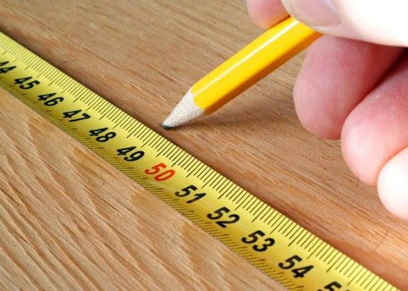
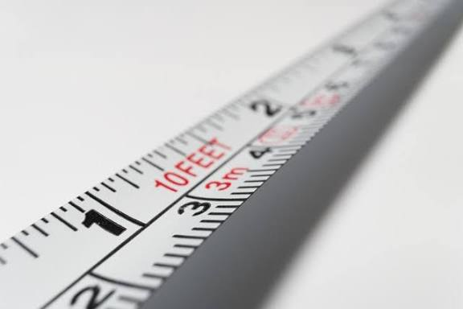
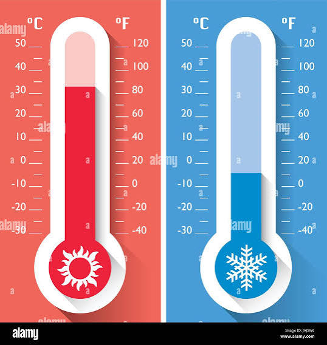
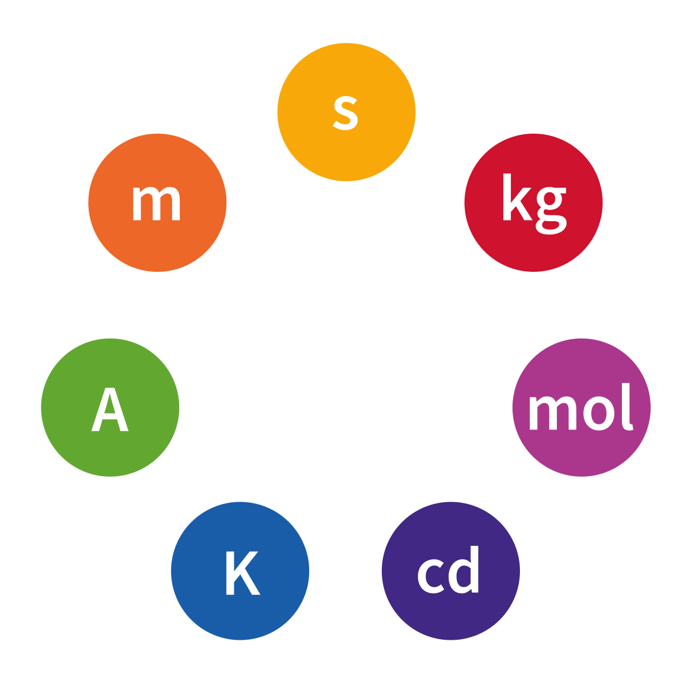
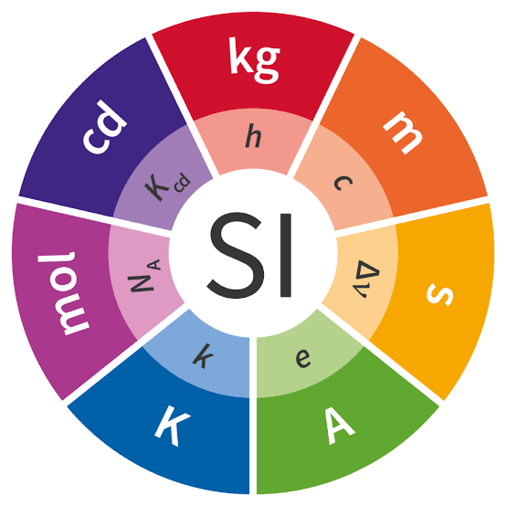
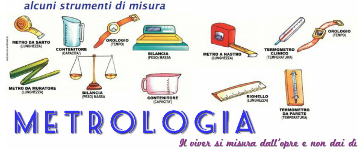
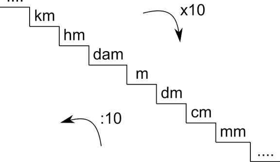
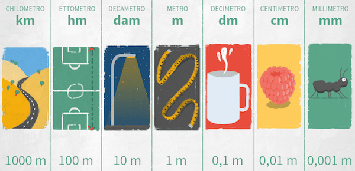
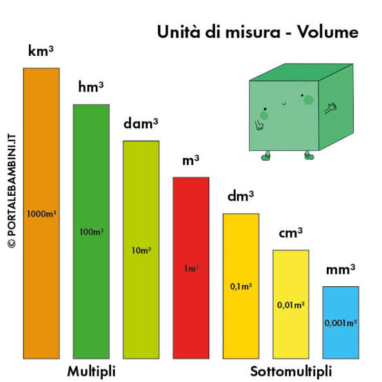
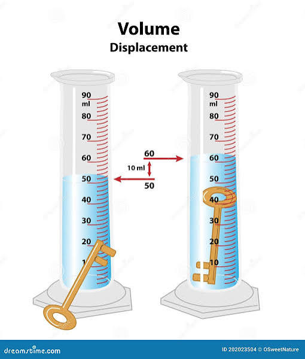

1. Misurare
Misurare significa confrontare una grandezza con un’unità di riferimento standardizzata, come usare un metro per valutare la lunghezza di un oggetto. Questo processo permette di quantificare fenomeni fisici in modo oggettivo e riproducibile. In termini tecnici, la misurazione richiede precisione, accuratezza e ripetibilità per essere valida. Ad esempio, misurare la lunghezza di un banco con un metro a nastro e annotare il risultato in centimetri.

2. Grandezze fisiche
Le grandezze fisiche sono proprietà misurabili di oggetti o fenomeni, come lunghezza, massa, tempo o temperatura. Possono essere fondamentali, come il chilogrammo, o derivate, come la velocità, che combina spazio e tempo. Nel Sistema Internazionale (SI), esistono sette grandezze fondamentali, ognuna con la propria unità di misura. Un esempio pratico è misurare la massa di un libro con una bilancia o la temperatura dell’aria con un termometro.

3. Unità di misura
Un’unità di misura è una quantità standardizzata usata come riferimento per esprimere il valore di una grandezza fisica. L’adozione di unità comuni, come il metro o il litro, facilita la comunicazione scientifica e tecnica in tutto il mondo. Le unità sono definite da campioni o costanti fisiche, come la velocità della luce per il metro. Ad esempio, usare il litro per misurare il volume di una bottiglia d’acqua o il metro per la lunghezza di una stanza.

4. Strumenti di misura
Gli strumenti di misura sono dispositivi progettati per quantificare una specifica grandezza fisica, come il termometro per la temperatura o la bilancia per la massa. Ogni strumento è tarato per una grandezza specifica e la sua precisione dipende dalla sensibilità e dalla risoluzione della scala. Ad esempio, usare un cronometro per misurare il tempo di una gara o un righello per la lunghezza di un foglio.

5. Registrare i dati
Registrare i dati significa annotare in modo sistematico i risultati delle misurazioni, ad esempio in tabelle o grafici. Questo processo consente di analizzare i dati nel tempo, confrontarli e trarre conclusioni scientifiche. I dati registrati possono essere utilizzati per calcoli statistici o per monitorare cambiamenti. Un esempio è scrivere in una tabella le temperature misurate ogni ora durante una giornata.

6. Incertezza di misura
L’incertezza di misura indica il margine di errore associato a una misurazione, causato dallo strumento, dall’operatore o dalle condizioni ambientali. Nessuna misurazione è perfetta: l’incertezza può essere espressa come errore assoluto (±0,1 cm) o relativo (±1%). Ad esempio, misurare la lunghezza di un foglio con un righello e indicare un’incertezza di ±1 mm per tenere conto degli errori di lettura.

7. Sensibilità di uno strumento
La sensibilità è la capacità di uno strumento di rilevare piccole variazioni della grandezza misurata, come una bilancia digitale che rileva 0,1 grammi. Uno strumento sensibile reagisce a cambiamenti minimi, ma può essere influenzato da disturbi esterni. La sensibilità è spesso espressa come rapporto tra la variazione dell’output e quella dell’input. Ad esempio, una bilancia digitale è più sensibile di una bilancia meccanica che rileva solo grammi interi.

8. Taratura
La taratura è il processo di regolazione di uno strumento per garantire che misuri correttamente, confrontandolo con un campione di riferimento certificato. Gli strumenti devono essere tarati periodicamente per mantenere la loro accuratezza nel tempo. Ad esempio, tarare una bilancia usando pesi campione di massa nota per assicurarsi che misuri correttamente.

9. Risoluzione di uno strumento
La risoluzione è la più piccola variazione della grandezza che lo strumento può rilevare, come un termometro digitale con risoluzione di 0,1°C. Una risoluzione elevata permette misurazioni più precise, ma non necessariamente più accurate. La risoluzione è determinata dalla scala dello strumento, ad esempio un righello con tacche ogni millimetro ha una risoluzione di 1 mm.

10. Errori sistematici e casuali
Gli errori sistematici sono costanti e prevedibili, come l’uso di un righello deformato, mentre quelli casuali sono imprevedibili, come una lettura tremolante. Gli errori sistematici influenzano l’accuratezza e possono essere corretti con la taratura, mentre quelli casuali richiedono misurazioni ripetute per ridurne l’effetto. Ad esempio, un righello deformato introduce un errore sistematico, mentre una lettura incerta introduce un errore casuale.
